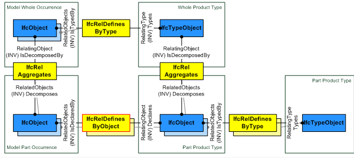
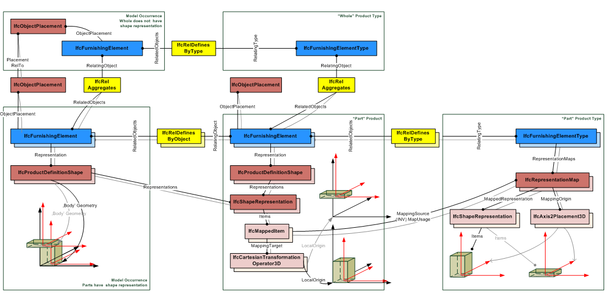

5.1.3.39 IfcRelDefinesByObject
| Définition par objet |
| Definiert durch Objekte - Relation |
The objectified relationship IfcRelDefinesByObject defines the relationship between an object taking part in an object type decomposition and an object occurrences taking part in an occurrence decomposition of that type.
The IfcRelDefinesByObject is a 1-to-N relationship, as it allows for the assignment of one declaring object information to a single or to many reflected objects. Those objects then share the same object property sets and, for subtypes of IfcProduct, the eventually assigned representation maps.
Only objects that take part in a type decomposition and in an occurrence decomposition of the same type can be connected by the IfcRelDefinesByObject relationship.
HISTORY New entity in IFC4.
Relationship use definition
The IfcRelDefinesByObject links the decomposed object type part, also called the "declaring part" with the occurrence of that part inside the occurrence of the decomposed type, also called the "reflected part", as shown in Figure 97.
 |
Figure 97 — Part definition relationships |
The IfcRelDefinesByObject can be used together with the shape representations of the product type as shown in Figure 98. The IfcShapeRepresentation of the "declaring part" is referenced by the "reflected part". The IfcObjectPlacement of the model occurrence (the whole) determines the position within the project context.
 |
Figure 98 — Part definition relationships with shape representation |
XSD Specification:
<xs:element name="IfcRelDefinesByObject" type="ifc:IfcRelDefinesByObject" substitutionGroup="ifc:IfcRelDefines" nillable="true"/>
<xs:complexType name="IfcRelDefinesByObject">
<xs:complexContent>
<xs:extension base="ifc:IfcRelDefines">
<xs:sequence>
<xs:element name="RelatedObjects">
<xs:complexType>
<xs:sequence>
<xs:element ref="ifc:IfcObject" maxOccurs="unbounded"/>
</xs:sequence>
<xs:attribute ref="ifc:itemType" fixed="ifc:IfcObject"/>
<xs:attribute ref="ifc:cType" fixed="set"/>
<xs:attribute ref="ifc:arraySize" use="optional"/>
</xs:complexType>
</xs:element>
<xs:element name="RelatingObject" type="ifc:IfcObject" nillable="true"/>
</xs:sequence>
</xs:extension>
</xs:complexContent>
</xs:complexType>
EXPRESS Specification:
|
ENTITY IfcRelDefinesByObject
|
 EXPRESS-G diagram
EXPRESS-G diagram
Attribute Definitions:
| RelatedObjects | : |
Objects being part of an object occurrence decomposition, acting as the "reflecting parts" in the relationship.
|
| RelatingObject | : |
Object being part of an object type decomposition, acting as the "declaring part" in the relationship.
|
Inheritance Graph:
|
ENTITY IfcRelDefinesByObject
|
 Link to this page
Link to this page